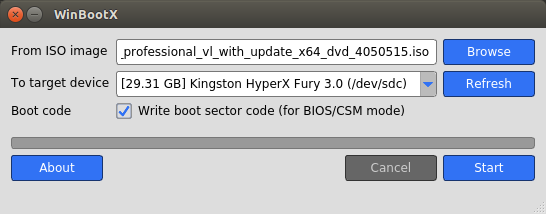

WinBootX is a simple utilty that can be used on Linux computers to make bootable drives from Windows installation ISO disc images.

This piece of software formats the USB drive to FAT32, installs appropiate boot code and then copies all files from ISO to the USB device. The USB drive is made bootable using the same binaries set by Windows tools (diskpart and bootsect /nt60). Binaries are from dumps of drives created with above mentioned tools. WinBootX can be used to boot any Windows version starting with Windows Vista. If EFI support is provided by the ISO, the USB drive will also be bootable in UEFI mode.
Launch the program from the terminal winbootx or from the application launcher. It will ask for your root password. The program cannot access and write directly on block devices without root permissions.
Click the Browse button to select an ISO file. It will be mounted when you select it. It the file is damaged or the program can't mount it and error message will be shown. It is mandatory to have a mounted ISO before continuing.
Select the destination device. Note that this program allows you to select non-removable hard drives. Be very careful what you select, or you may wipe your data.
Install dependencies:
sudo apt install gcc build-essentials libglu1-mesa-dev libmount-dev qtbase5-dev qttools5-dev
Compile and install:
qmake-qt5 WinBootX.pro make sudo ./install.sh
That's it!